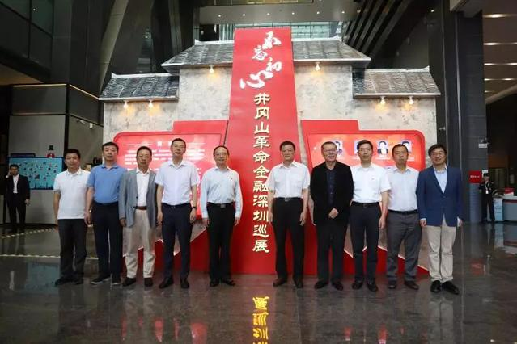

首页
坚守初心
基本方略
八个不忘初心
三个永不动摇
理论点评
图文资讯
名家观点
为何反复强调“不忘初心，牢记使命”
习近平总书记在党的十九大报告中开宗明义指出，大会的主题是：不忘初心，牢记使命，高举中国特色社会主义伟大旗帜，决胜全面建成小康社会，夺取新时代中国特色社会主义伟大胜利，为实现中华民族伟大复兴的中国梦不懈奋斗。
解放日报
2017-12-12
人民网评：不忘初心，永葆青春
党的十九大闭幕仅一周，中共中央总书记、国家主席、中央军委主席习近平带领中共中央政治局常委李克强、栗战书、汪洋、王沪宁、赵乐际、韩正，于31日专程从北京前往上海和浙江嘉兴，瞻仰上海中共一大会址和浙江嘉兴南湖红船，回顾建党历史，重温入党誓词，宣示新一届党中央领导集体的坚定政治信念。
人民网-观点频道
晓夕
2017-11-01
新华社评论员：不忘初心，永久奋斗
５月３日，东北师范大学荣誉教授、博士生导师郑德荣在长春病逝。在生命的最后时刻，他还在病床上修改学术文章。“要不忘初心，坚持马克思主义！”这是郑德荣同志最后的遗言，也是他９２岁人生的真实写照。
新华社
2018-06-25
辛识平：不忘初心的历史担当
“中国共产党人的初心和使命，就是为中国人民谋幸福，为中华民族谋复兴。”在党的十九大报告中，习近平同志开宗明义，指明中国共产党人的历史担当。进入新时代，明确新使命，阐明新思想，提出新方略，擘画新蓝图，开启新征程……3万多字的报告，有力书写了当代中国共产党人承前启后、继往开来，夺取中国特色社会主义伟大胜利的使命担当。
新华社
2017-10-20
湖南日报评论员：不忘初心 牢记使命
“不忘初心，方得始终”，这一高频词，又一次出现在党的里程碑式的重要报告里。“不忘初心，牢记使命”，成为理解党的十九大主题的密钥和口令。“中国共产党人的初心和使命，就是为中国人民谋幸福，为中华民族谋复兴。”习近平同志的铿锵之音，响彻在人民大会堂，也回荡在辽阔的神州大地。
湖南日报
2017-10-19
郑州文明网 : 不忘初心 敢于担当
习近平总书记在庆祝中国共产党成立95周年大会上的讲话中多次强调“不忘初心，继续前进”，总书记的讲话不仅回顾了历史，也展望了未来，以非常深沉的历史使命感，聚焦于党的远大理想和崇高追求，以“不忘初心，继续前进”的红线，体现了我们党全心全意为人民服务的宗旨，体现了共产党人在实现中国梦进程中的责任与担当。
郑州文明网
2016-07-20
中国青年报评论员：不忘初心跟党走 青春建功新时代
习近平总书记在党的十九大上作的报告，深刻指出中国特色社会主义进入新时代，深刻阐述了新时代中国特色社会主义思想，对从现在起到本世纪中叶把我国建成社会主义现代化强国作了战略安排，对今后一个时期党和国家各项事业发展作出全面部署，并专门就青年一代承担使命、接力奋斗作了强调，指出“中国梦是历史的、现实的，也是未来的；是我们这一代的，更是青年一代的。中华民族伟大复兴的中国梦终将在一代代青年的接力奋斗中变为现实”，强调“广大青年要坚定理想信念，志存高远，脚踏实地，勇做时代的弄潮儿，在实现中国梦的生动实践中放飞青春梦想，在为人民利益的不懈奋斗中书写人生华章！”报告蕴含的丰富思想内容、作出的重大战略判断、规划的宏伟目标蓝图、推出的重大战略举措，特别是对青年的殷殷期待和谆谆嘱托，为广大青年奋勇投身新时代、接力建功中国梦指明了前进方向、注入了强大动力。
中国青年报
2017-10-19
河南日报评论员：不忘初心是为民
终于发现了最适合我的编程语言Julia 做大数据/机器学习方面的工作多年. 最为熟悉 C++, Matlab/R/Python/Java/Scala 都用过.但每种语言的体验总觉得有缺憾. 一个理念: 如果不是语言专家, 那么编程语言, 仅是实现想法的工具. 更为重要的事情如何快速准确地实现功能和想法, 而不是消耗在工具本身. 1. C++ 与 C 语言一样, 计算
河南日报
2015-06-05
军报评论：不忘初心 继续前进
在庆祝中国共产党成立95周年大会上，习总书记站在历史和全局的高度，全面回顾了我们党团结带领中国人民不懈奋斗的光辉历程，热情讴歌了我们党为中华民族作出的伟大历史贡献，系统总结了我们党领导革命、建设和改革的宝贵经验，深刻阐述了面向未来、面对挑战必须牢牢把握的八方面要求，号召全党同志一定要不忘初心、继续前进。习总书记的重要讲话，高屋建瓴、总揽全局，内涵丰富、思想深刻，令人鼓舞、催人奋进，通篇闪耀着马克思主义的真理光辉和时代光芒，是引领党和人民事业不断发展的又一篇马克思主义纲领性文献。
解放军报
2016-07-02
热门话题
01
11月
人民网评：不忘初心，永葆青春
人民网-观点频道
12
12月
为何反复强调“不忘初心，牢记使命”
解放日报
25
6月
新华社评论员：不忘初心，永久奋斗
新华社
图文资讯

不忘初心——井冈山革命金融深圳巡展
传承红色基因 望城经开区开展系列活动献礼“七一”
城区举办纪念建党97周年“不忘初心 牢记使命”主题演讲比赛
山东黄岛边检站：剪纸绘画心向党 不忘初心颂党恩
政论专题片《不忘初心 继续前进》持续引热议
新干公路分局赴莲花开展“不忘初心 牢记使命”红色主题教育活动